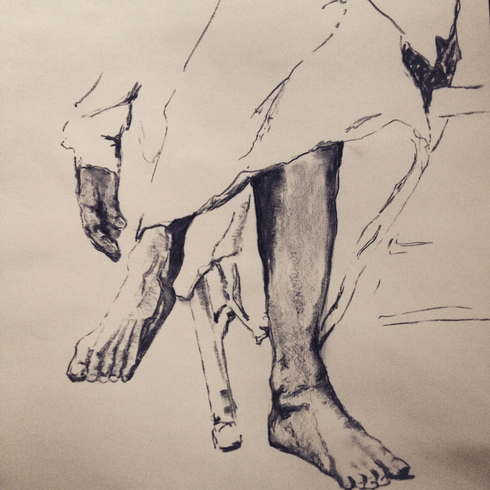

Dear fellow Sadhaka,
This is a drawing (titled: Mere Gurudev) of Guruji's feet by Aretha McKinney, Junior Intermediate III Certified Iyengar Yoga Teacher and Owner/Director of The Iyengar Yoga Center of Nashville, TN, USA.
She used a photo of Guruji sitting on the porch to create the drawing. The original artwork is able to be scanned and the file emailed if you are interested in including this piece in the book.
Namaskar,
Holly Kostura, Certified Iyengar Yoga Teacher
Bethlehem, PA, USA

Holly Walck Kostura
Director, Iyengar Yoga Center of the Lehigh Valley
215.200.9727